Aaron
AaronGiám sát bảo tồn rạn san hô vịnh Nha Trang
Rạn san hô vịnh Nha Trang thường chỉ được đánh giá qua các đợt lặn định kỳ, nên những biến động ngắn của môi trường nước và sự thay đổi của quần xã san hô giữa hai đợt lặn dễ bị bỏ lỡ. Dự án tiếp cận vấn đề theo hai hướng: quan trắc liên tục chất lượng nước trong khu bảo tồn, và xây dựng dữ liệu hình ảnh dưới nước về chính quần xã san hô.
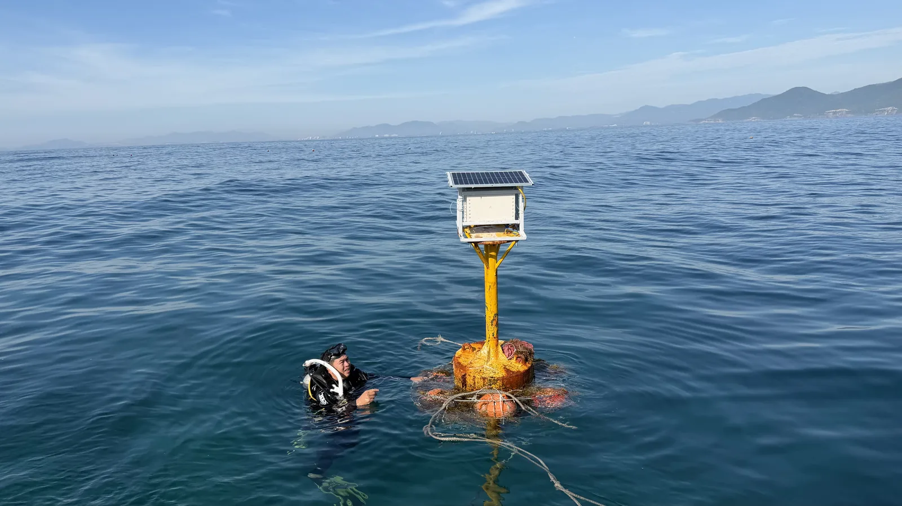

Quan trắc liên tục chất lượng nước trong khu bảo tồn
Hệ thống quan trắc tự động đặt cùng tầng nước với rạn, truyền dữ liệu thời gian thực về một ứng dụng giám sát dùng chung.
Đọc phần A ↓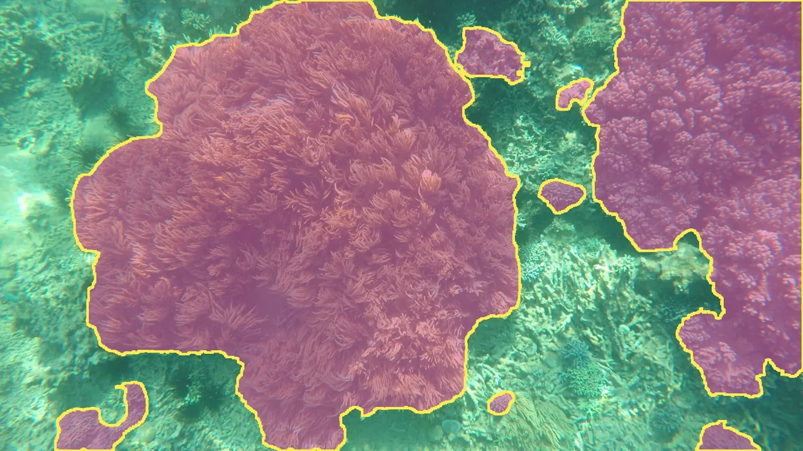
Thu thập và chuẩn hoá dữ liệu hình ảnh dưới nước
Khảo sát quần xã san hô bằng video dưới nước, tuyển chọn khung hình và gán nhãn phân vùng từng tập đoàn san hô có kiểm chứng.
Đọc phần B ↓Quan trắc liên tục chất lượng nước trong khu bảo tồn
Câu hỏi nghiên cứuMột hệ thống quan trắc tự động đặt trong vùng bảo vệ nghiêm ngặt, cùng tầng nước với rạn, có thể ghi nhận liên tục và ổn định các biến động ngắn hạn của chất lượng nước trong điều kiện biển mở hay không, và dữ liệu đó được khai thác như thế nào trong công tác quản lý?
A.1 Thiết kế hệ thống và quá trình phát triển trạm
Trạm quan trắc gồm cụm cảm biến đặt dưới nước, cùng tầng nước với rạn, và một hộp điện tử kín nước chạy bằng năng lượng mặt trời phía trên mặt nước. Trạm nằm trong vùng bảo vệ nghiêm ngặt của khu bảo tồn và gửi số liệu liên tục qua mạng di động, nhờ đó ghi nhận được cả những biến động ngắn mà các đợt lặn định kỳ khó bắt gặp.
Trạm đã qua ba thế hệ. Tháng 4.2026, nhóm đưa trạm thế hệ thứ hai ra khu vực bảo vệ nghiêm ngặt: thiết bị được chở ra bằng tàu (Hình 1a), hộp điện tử và tấm pin đặt trên đỉnh một phao tiêu, còn cụm cảm biến được thợ lặn neo xuống phía dưới (Hình 1b).
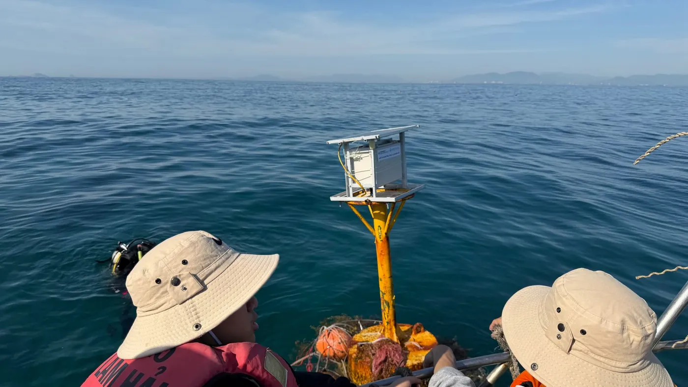
bMôi trường biển là thách thức chính đối với độ bền của trạm. Hộp điện tử nằm ngay trên mặt biển thường xuyên chịu hơi muối; trong quá trình vận hành, có lần muối lọt vào hộp khiến trạm ngừng hoạt động lúc 3 giờ sáng. Tháng 10.2026, trạm được thay bằng thế hệ thứ ba, dạng bè nổi mang tấm pin và tủ thiết bị, được lắp hoàn chỉnh trên boong tàu trước khi thả (Hình 2). Cùng lúc, bộ thông số được điều chỉnh theo mục tiêu bảo tồn: bỏ độ mặn và độ đục, bổ sung độ bão hoà oxy (PDO); trạm hiện đo nhiệt độ, pH, oxy hoà tan (DO) và PDO. Sau hai đến ba tuần vận hành, số đo bắt đầu trôi, cho thấy bài toán hiệu chuẩn cảm biến trong môi trường biển vẫn còn mở.
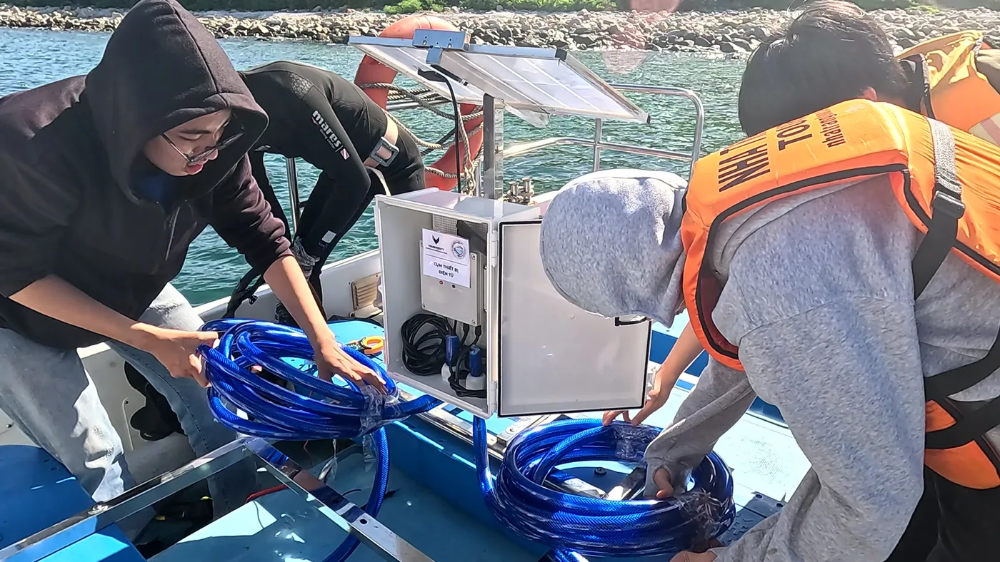
abA.2 Truyền dẫn, hiển thị và chuyển giao dữ liệu
Số liệu từ trạm chỉ có giá trị khi về được đất liền và tới tay người quản lý. Trạm được nối qua một mạng riêng ảo (VPN) do tôi thiết lập và duy trì, nhờ đó máy chủ và thiết bị của nhóm truy cập được trạm từ xa. Dữ liệu hiển thị trên ứng dụng giám sát tôi thiết kế trên nền ThingsBoard: màn tổng quan đặt trạm trên bản đồ cùng số đo mới nhất, chỉ số an toàn nước và lịch sử cảnh báo (Hình 3a); mỗi thông số có ngưỡng an toàn và ngưỡng theo dõi riêng (Hình 3b).
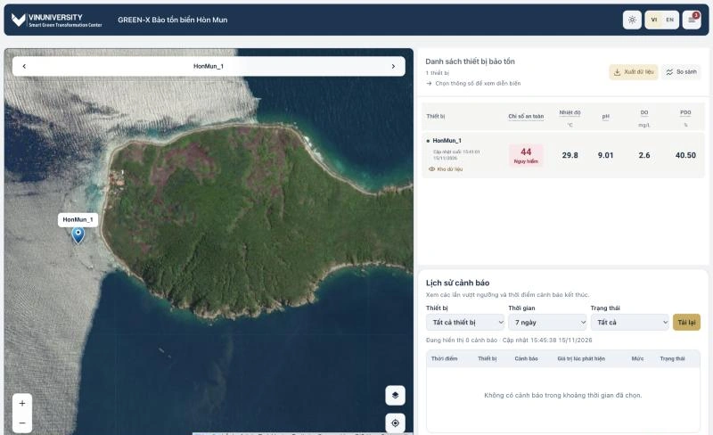
a b
bTháng 10.2026, nhóm trình bày ứng dụng và trao đổi về nhu cầu khai thác dữ liệu với Ban Quản lý Vịnh Nha Trang (Hình 4), bước đầu đưa dữ liệu quan trắc vào công tác quản lý khu bảo tồn.
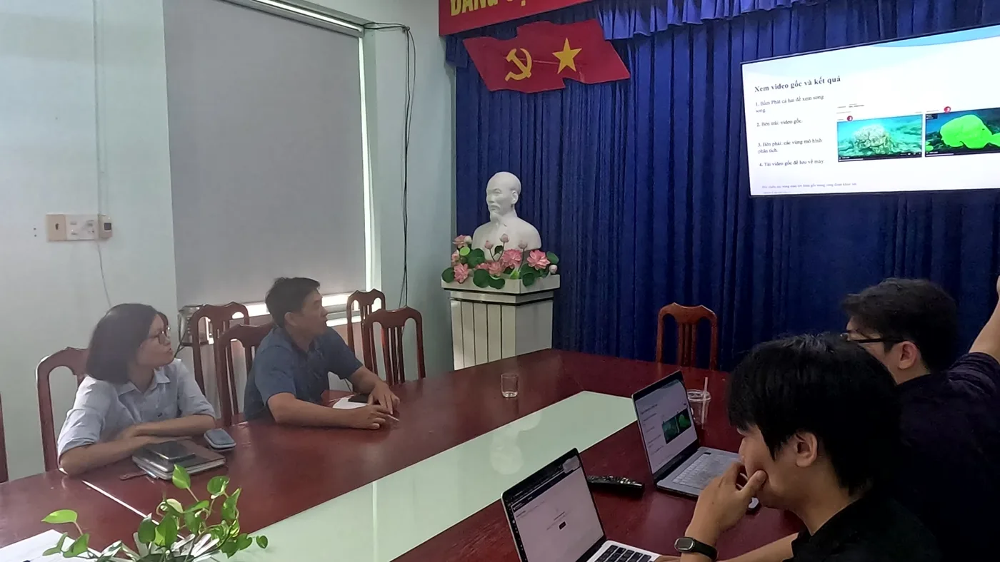
a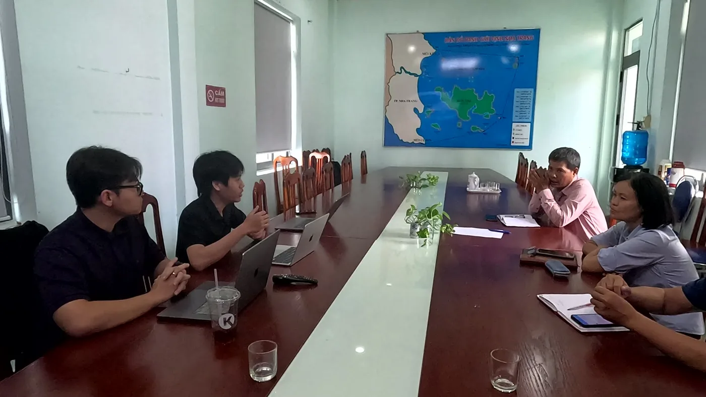
bA.3 Nhật ký triển khai thực địa
| 04.2026 | Lắp trạm thế hệ thứ hai lên phao tiêu; thiết lập VPN cho trạm. |
|---|---|
| 06.2026 | Bảo trì trạm thế hệ thứ hai sau sự cố muối lọt vào hộp điện tử. |
| 10.2026 | Lắp trạm thế hệ thứ ba; làm việc với Ban Quản lý Vịnh Nha Trang về ứng dụng giám sát. |
Thu thập và chuẩn hoá dữ liệu hình ảnh dưới nước
Câu hỏi nghiên cứuCần quy trình thu thập và tuyển chọn dữ liệu như thế nào để xây dựng bộ dữ liệu hình ảnh rạn san hô Việt Nam đủ chất lượng cho các mô hình phân vùng tự động?
B.1 Thu thập dữ liệu dưới nước
Hình ảnh dưới nước được thu trong các đợt khảo sát, với tôi là người trực tiếp ghi hình. Hai đợt đầu (4 và 6.2026) dùng thiết bị lặn điều khiển từ xa Chasing Gladius Mini S, thả từ tàu khảo sát neo phía trên vùng rạn (Hình 5). Kể cả khi gắn thêm GoPro Hero 4, độ nét và màu sắc của hình ảnh vẫn chưa đáp ứng yêu cầu của dữ liệu huấn luyện.
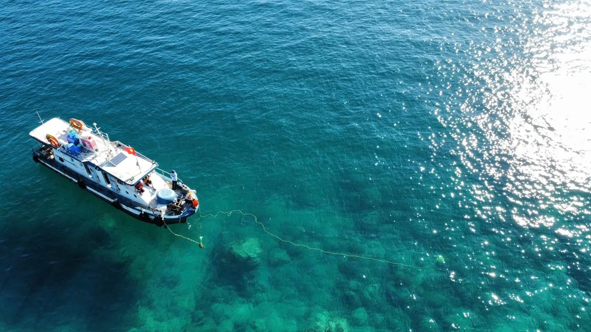
Từ tháng 8.2026, nhóm chuyển sang ghi hình bằng GoPro Hero 13 và chất lượng hình ảnh đạt yêu cầu. Trong đợt khảo sát đầu tháng 10.2026, video được ghi tại các rạn quanh Hòn Một, Hòn Chồng, Hòn Tre và Hòn Mun.
B.2 Tuyển chọn khung hình và gán nhãn
Một đoạn video dài vài phút cho hàng nghìn khung hình gần giống nhau, phần lớn bị mờ, rung hoặc chỉ thấy nước. Từ video khảo sát, khoảng 2.000 khung hình đã được tuyển chọn theo độ nét, mức trùng lặp và độ phủ giữa các điểm khảo sát. Các khung hình này đang được gán nhãn phân vùng: mỗi tập đoàn san hô được khoanh một đường bao riêng, sau đó kiểm tra lại thủ công (Hình 6).
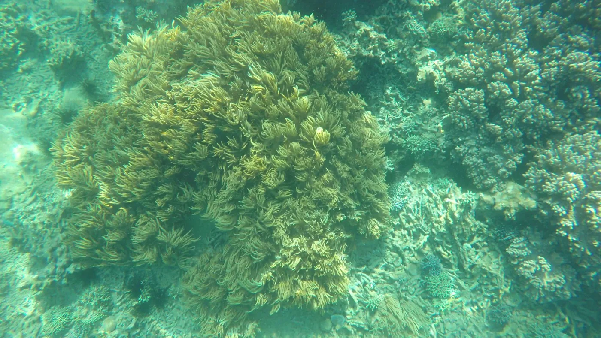
aCác khung hình khác nhau rõ rệt về mật độ và kích thước tập đoàn san hô: có nơi các tập đoàn nằm rời rạc trên nền đáy, có nơi chúng phủ kín khung hình và tiếp giáp nhau (Hình 7). Sự đa dạng này là điều kiện để mô hình phân vùng học được ranh giới giữa các tập đoàn trong nhiều bối cảnh. Bộ dữ liệu là cơ sở cho công bố NTCoral, trong đó tôi là tác giả thứ nhất.
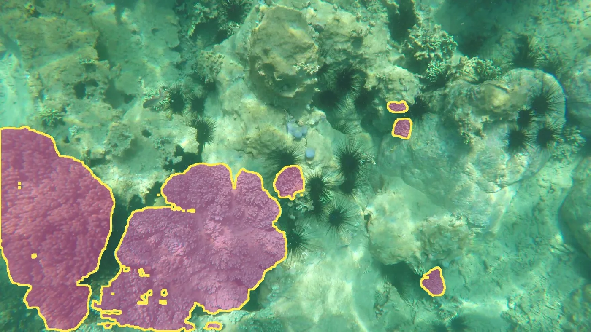
a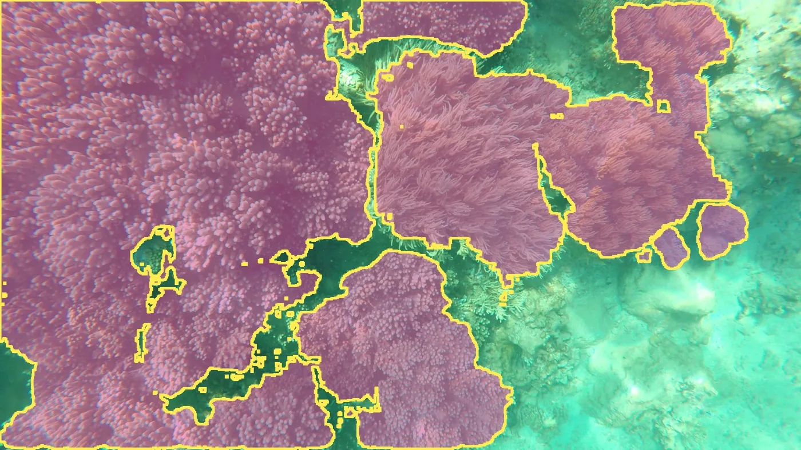
bB.3 Lưu trữ và đối chiếu kết quả
Video khảo sát được lưu trong kho dữ liệu của ứng dụng giám sát, xếp theo ngày quay (Hình 8a). Mỗi video có thể phát song song với kết quả phân vùng để đối chiếu (Hình 8b); mô hình phân vùng do các thành viên khác trong nhóm phát triển.
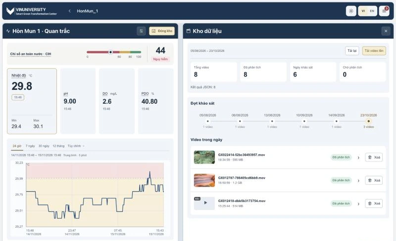
a b
bB.4 Nhật ký khảo sát
| 04.2026 | Khảo sát bằng thiết bị lặn điều khiển từ xa Chasing Gladius Mini S. |
|---|---|
| 06.2026 | Gắn thêm GoPro Hero 4 lên thiết bị lặn; chất lượng hình ảnh chưa đạt yêu cầu. |
| 08.2026 | Chuyển sang GoPro Hero 13; hình ảnh đạt chất lượng dữ liệu. |
| 10.2026 | Ghi hình các rạn quanh Hòn Một, Hòn Chồng, Hòn Tre và Hòn Mun. |
Công bố

Truyền thông
GREEN-X đã đưa tin về các phiên làm việc của dự án: với Ban Quản lý Vịnh Nha Trang, 22.08.2025, với các sở, ngành tỉnh Khánh Hoà, 16.03.2026 và với Sở Văn hoá, Thể thao và Du lịch Khánh Hoà, 18.03.2026.